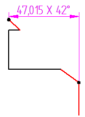
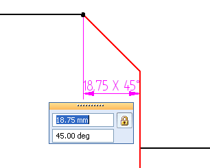

Place a chamfer dimension
-
Choose the Chamfer Dimension command
 .
. -
Click a linear element to use as the dimension base line.
The element is the vertical axis in the chamfer dimension.
-
Click a second linear element, the chamfer line, as the line to measure.
The angle between this element and the horizontal axis relative to the first element determines the second value in the chamfer dimension.
-
Move the cursor where you want to place the dimension.
The dimension dynamically follows the movement of the cursor.
-
Click to place the dimension.

-
Alternatively, you can place the chamfer dimension using two key points by doing the following:
-
Select the dimension base line.
-
Press the Shift key while you click a key point from which you want to measure the chamfer.
-
Click a second key point to measure to.

-
-
To override the chamfer dimension values, click the dimension text. A dimension value edit dialog box displays the current values. You can change the linear value in the top box and the angular value in the bottom box.

When you override a value, the not-to-scale underline symbol is displayed on the dimension.
-
To use the 45 degree character for parallel and perpendicular chamfer dimensions, set the Use 45 degree character option on the Text tab (Dimension Style and Dimension Properties).
-
To specify the lowercase x for the multiplication symbol, set the Use lower case multiplication symbol "x" option on the Text tab.